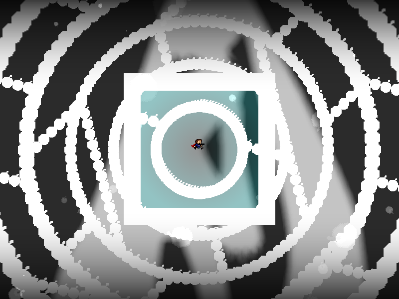
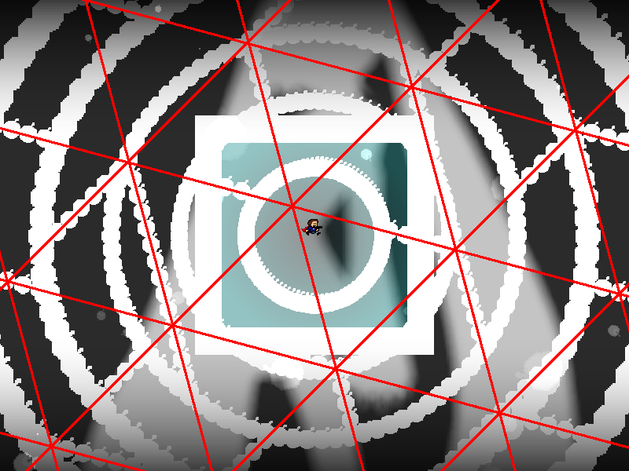
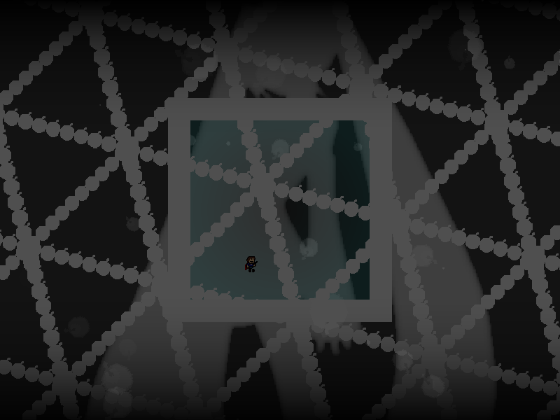
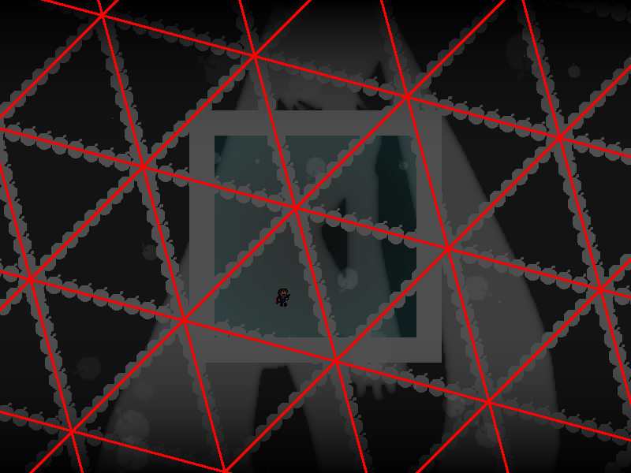

chapter10 - section3

| creator | segment | label | jump |
|---|---|---|---|
| NN | 2:23.90~2:25.20 | Q+R*A | double |
角度がランダムかつ中心の位置が一定の条件のもとランダムな弾幕です。
2:22.30~2:24.70において画面中央を中心とする同心円状弾幕で分割された空間に関して、それぞれの層（最も内側の層を除く）において異なる角度の直線状弾幕が複数観測されます（fig.10-3.1.a）。
観測される直線状弾幕について、それらをすべて重ね合わせることで正三角形の格子が形成され（fig.10-3.1.b）、2:24.70以降において出現する格子状弾幕に関してはその格子に沿って出現します（fig.10-3.2.a, fig.10-3.2.b）。
2:22.30~2:24.70におけるそれぞれの層で観測される直線状弾幕の角度（fig.10-3.1.a）から、2:24.70以降における格子状弾幕の形状（fig.10-3.1.b）を予測することを目的としています。



